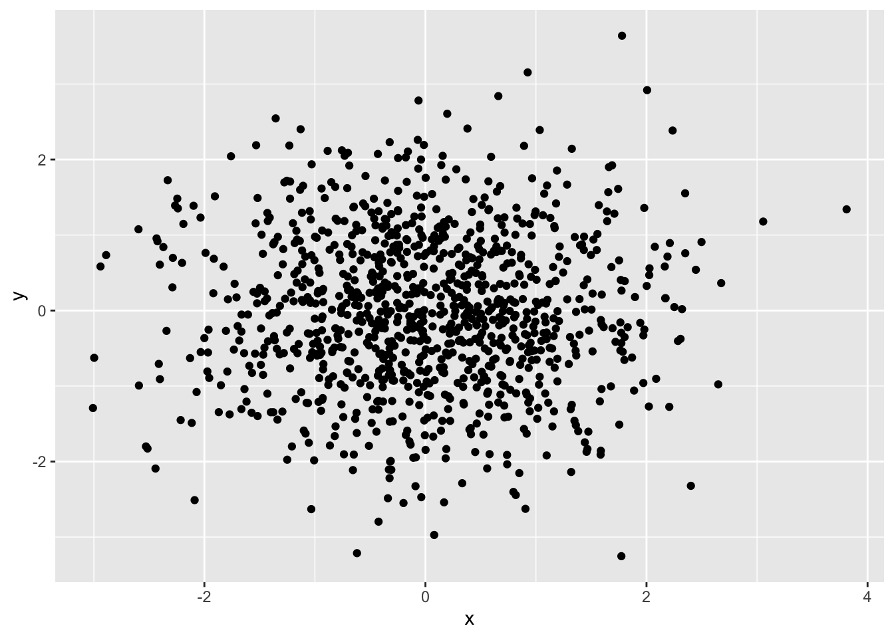
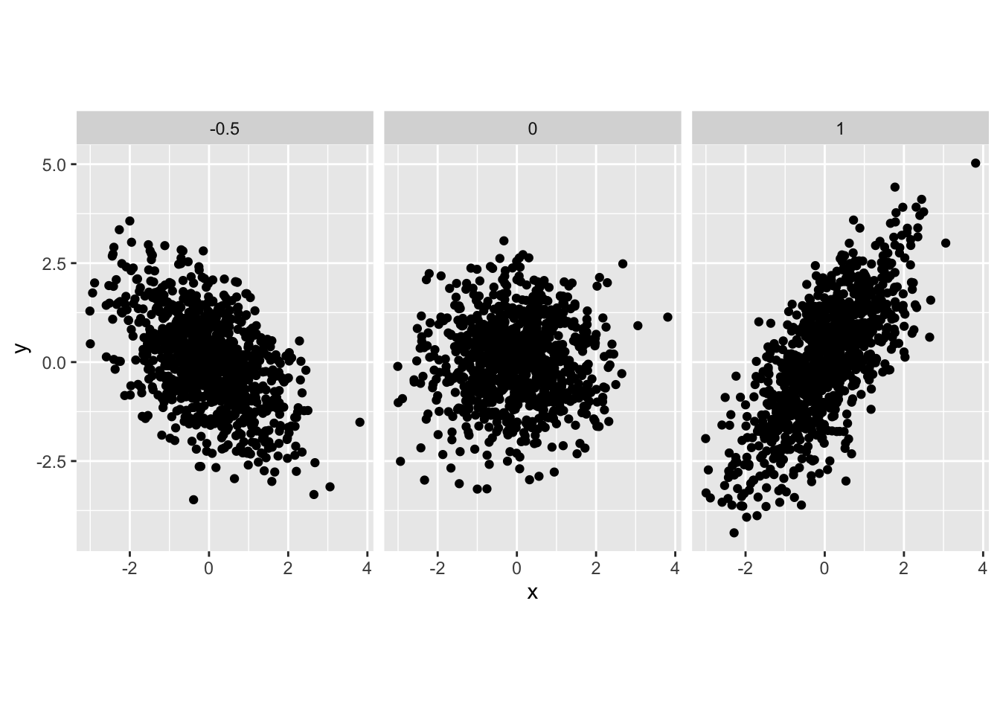
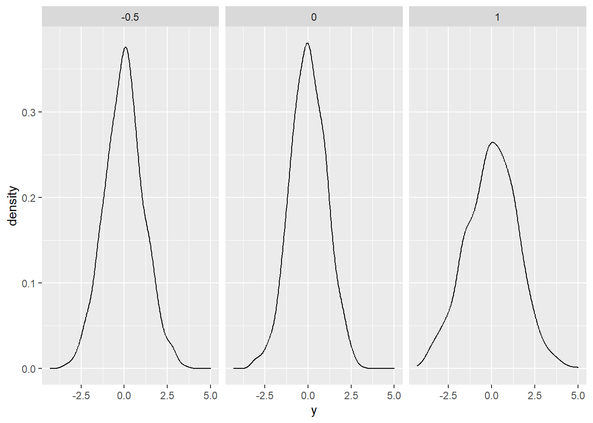
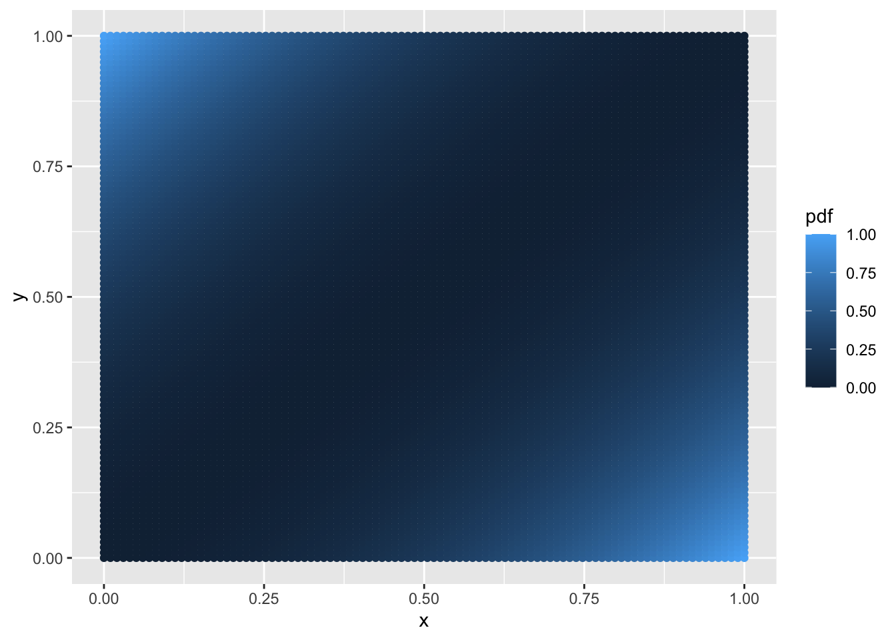
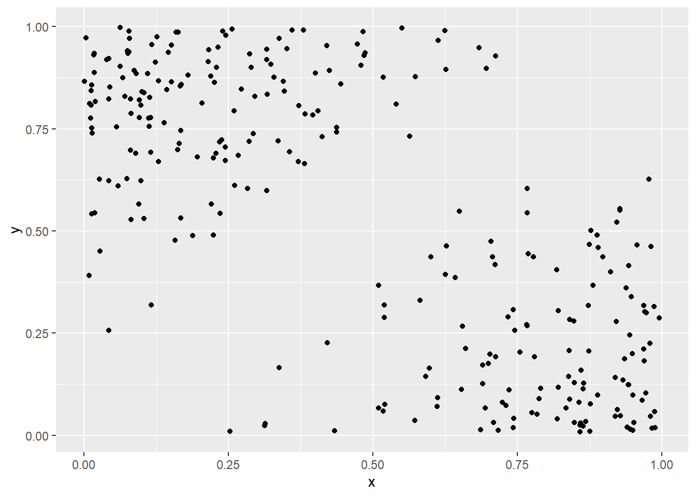
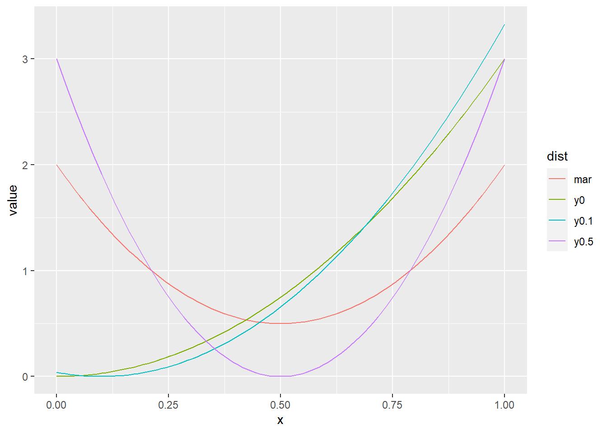
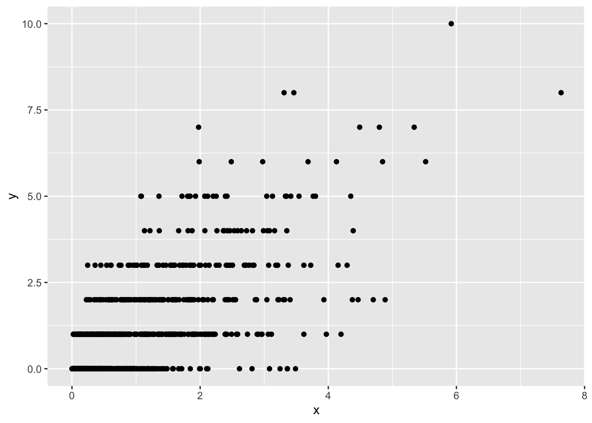
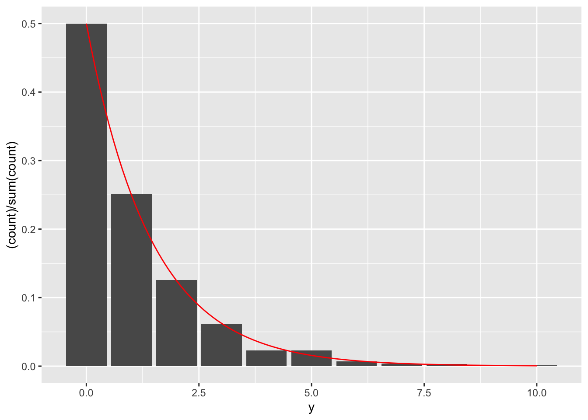

Chapter 5 Multiple random variables
This chapter deals with multiple random variables and their distributions.
The students are expected to acquire the following knowledge:
Theoretical
- Calculation of PDF of transformed multiple random variables.
- Finding marginal and conditional distributions.
R
- Scatterplots of bivariate random variables.
- New R functions (for example, expand.grid).
5.1 General
Exercise 5.1 Let \(X \sim \text{N}(0,1)\) and \(Y \sim \text{N}(0,1)\) be independent random variables. Draw 1000 samples from \((X,Y)\) and plot a scatterplot. Now let \(X \sim \text{N}(0,1)\) and \(Y | X = x \sim N(ax, 1)\). Draw 1000 samples from \((X,Y)\) for \(a = 1\), \(a=0\), and \(a=-0.5\). Plot the scatterplots. How would you interpret parameter \(a\)? Plot the marginal distribution of \(Y\) for cases \(a=1\), \(a=0\), and \(a=-0.5\). Can you guess which distribution it is?
set.seed(1)
nsamps <- 1000
x <- rnorm(nsamps)
y <- rnorm(nsamps)
ggplot(data.frame(x, y), aes(x = x, y = y)) +
geom_point()
y1 <- rnorm(nsamps, mean = 1 * x)
y2 <- rnorm(nsamps, mean = 0 * x)
y3 <- rnorm(nsamps, mean = -0.5 * x)
df <- tibble(x = c(x,x,x),
y = c(y1,y2,y3),
a = c(rep(1, nsamps), rep(0, nsamps), rep(-0.5, nsamps)))
ggplot(df, aes(x = x, y = y)) +
geom_point() +
facet_wrap(~a) +
coord_equal(ratio=1)
# Parameter a controls the scale of linear dependency between X and Y.
ggplot(df, aes(x = y)) +
geom_density() +
facet_wrap(~a)
5.2 Bivariate distribution examples
Exercise 5.2 (Discrete bivariate random variable) Let \(X\) represent the event that a die rolls an even number and let \(Y\) represent the event that a die rolls one, two, or a three.
Find the marginal distributions of \(X\) and \(Y\).
Find the PMF of \((X,Y)\).
Find the CDF of \((X,Y)\).
Find \(P(X = 1 | Y = 1)\).
Solution.
\[\begin{align} P(X = 1) = \frac{1}{2} \text{ and } P(X = 0) = \frac{1}{2} \\ P(Y = 1) = \frac{1}{2} \text{ and } P(Y = 0) = \frac{1}{2} \\ \end{align}\]
\[\begin{align} P(X = 1, Y = 1) = \frac{1}{6} \\ P(X = 1, Y = 0) = \frac{2}{6} \\ P(X = 0, Y = 1) = \frac{2}{6} \\ P(X = 0, Y = 0) = \frac{1}{6} \end{align}\]
\[\begin{align} P(X \leq x, Y \leq y) = \begin{cases} \frac{1}{6} & x = 0, y = 0 \\ \frac{3}{6} & x \neq y \\ 1 & x = 1, y = 1 \end{cases} \end{align}\]
\[\begin{align} P(X = 1 | Y = 1) = \frac{1}{3} \end{align}\]
Exercise 5.3 (Continuous bivariate random variable) Let \(p(x,y) = 6 (x - y)^2\) be the PDF of a bivariate random variable \((X,Y)\), where both variables range from zero to one.
Find CDF.
Find marginal distributions.
Find conditional distributions.
R: Plot a grid of points and colour them by value – this can help us visualize the PDF.
R: Implement a random number generator, which will generate numbers from \((X,Y)\) and visually check the results.
R: Plot the marginal distribution of \(Y\) and the conditional distributions of \(X | Y = y\), where \(y \in \{0, 0.1, 0.5\}\).
Solution.
\[\begin{align} F(x,y) &= \int_0^{x} \int_0^{y} 6 (t - s)^2 ds dt\\ &= 6 \int_0^{x} \int_0^{y} t^2 - 2ts + s^2 ds dt\\ &= 6 \int_0^{x} t^2y - ty^2 + \frac{y^3}{3} dt \\ &= 6 (\frac{x^3 y}{3} - \frac{x^2y^2}{2} + \frac{x y^3}{3}) \\ &= 2 x^3 y - 3 t^2y^2 + 2 x y^3 \end{align}\]
\[\begin{align} p(x) &= \int_0^{1} 6 (x - y)^2 dy\\ &= 6 (x^2 - x + \frac{1}{3}) \\ &= 6x^2 - 6x + 2 \end{align}\] \[\begin{align} p(y) &= \int_0^{1} 6 (x - y)^2 dx\\ &= 6 (y^2 - y + \frac{1}{3}) \\ &= 6y^2 - 6y + 2 \end{align}\]
\[\begin{align} p(x|y) &= \frac{p(xy)}{p(y)} \\ &= \frac{6 (x - y)^2}{6 (y^2 - y + \frac{1}{3})} \\ &= \frac{(x - y)^2}{y^2 - y + \frac{1}{3}} \end{align}\] \[\begin{align} p(y|x) &= \frac{p(xy)}{p(x)} \\ &= \frac{6 (x - y)^2}{6 (x^2 - x + \frac{1}{3})} \\ &= \frac{(x - y)^2}{x^2 - x + \frac{1}{3}} \end{align}\]
set.seed(1)
# d
pxy <- function (x, y) {
return ((x - y)^2)
}
x_axis <- seq(0, 1, length.out = 100)
y_axis <- seq(0, 1, length.out = 100)
df <- expand.grid(x_axis, y_axis)
colnames(df) <- c("x", "y")
df <- cbind(df, pdf = pxy(df$x, df$y))
ggplot(data = df, aes(x = x, y = y, color = pdf)) +
geom_point()
# e
samps <- NULL
for (i in 1:10000) {
xt <- runif(1, 0, 1)
yt <- runif(1, 0, 1)
pdft <- pxy(xt, yt)
acc <- runif(1, 0, 6)
if (acc <= pdft) {
samps <- rbind(samps, c(xt, yt))
}
}
colnames(samps) <- c("x", "y")
ggplot(data = as.data.frame(samps), aes(x = x, y = y)) +
geom_point()
# f
mar_pdf <- function (x) {
return (6 * x^2 - 6 * x + 2)
}
cond_pdf <- function (x, y) {
return (((x - y)^2) / (y^2 - y + 1/3))
}
df <- tibble(x = x_axis,
mar = mar_pdf(x),
y0 = cond_pdf(x, 0),
y0.1 = cond_pdf(x, 0.1),
y0.5 = cond_pdf(x, 0.5)) %>%
gather(dist, value, -x)
ggplot(df, aes(x = x, y = value, color = dist)) +
geom_line()
Exercise 5.4 (Mixed bivariate random variable) Let \(f(x,y) = \frac{\beta^{\alpha}}{\Gamma(\alpha)y!} x^{y+ \alpha -1} e^{-x(1 + \beta)}\) be the PDF of a bivariate random variable, where \(x \in (0, \infty)\) and \(y \in \mathbb{N}_0\).
Find the marginal distribution of \(X\). Do you recognize this distribution?
Find the conditional distribution of \(Y | X\). Do you recognize this distribution?
Calculate the probability \(P(Y = 2 | X = 2.5)\) for \((X,Y)\).
Find the marginal distribution of \(Y\). Do you recognize this distribution?
R: Take 1000 random samples from \((X,Y)\) with parameters \(\beta = 1\) and \(\alpha = 1\). Plot a scatterplot. Plot a bar plot of the marginal distribution of \(Y\), and the theoretical PMF calculated from d) on the range from 0 to 10. Hint: Use the gamma function in R.?
Solution.
\[\begin{align} p(x) &= \sum_{k = 0}^{\infty} \frac{\beta^{\alpha}}{\Gamma(\alpha)k!} x^{k + \alpha -1} e^{-x(1 + \beta)} & \\ &= \sum_{k = 0}^{\infty} \frac{\beta^{\alpha}}{\Gamma(\alpha)k!} x^{k} x^{\alpha -1} e^{-x} e^{-\beta x} & \\ &= \frac{\beta^{\alpha}}{\Gamma(\alpha)} x^{\alpha -1} e^{-\beta x} \sum_{k = 0}^{\infty} \frac{1}{k!} x^{k} e^{-x} & \\ &= \frac{\beta^{\alpha}}{\Gamma(\alpha)} x^{\alpha -1} e^{-\beta x} & \text{the last term above sums to one} \end{align}\] This is the Gamma PDF.
\[\begin{align} p(y|x) &= \frac{p(x,y)}{p(x)} \\ &= \frac{\frac{\beta^{\alpha}}{\Gamma(\alpha)y!} x^{y+ \alpha -1} e^{-x(1 + \beta)}}{\frac{\beta^{\alpha}}{\Gamma(\alpha)} x^{\alpha -1} e^{-\beta x}} \\ &= \frac{x^y e^{-x}}{y!}. \end{align}\] This is the Poisson PMF.
\[\begin{align} P(Y = 2 | X = 2.5) = \frac{2.5^2 e^{-2.5}}{2!} \approx 0.26. \end{align}\]
\[\begin{align} p(y) &= \int_{0}^{\infty} \frac{\beta^{\alpha}}{\Gamma(\alpha)y!} x^{y + \alpha -1} e^{-x(1 + \beta)} dx & \\ &= \frac{1}{y!} \int_{0}^{\infty} \frac{\beta^{\alpha}}{\Gamma(\alpha)} x^{(y + \alpha) -1} e^{-(1 + \beta)x} dx & \\ &= \frac{1}{y!} \frac{\beta^{\alpha}}{\Gamma(\alpha)} \int_{0}^{\infty} \frac{\Gamma(y + \alpha)}{(1 + \beta)^{y + \alpha}} \frac{(1 + \beta)^{y + \alpha}}{\Gamma(y + \alpha)} x^{(y + \alpha) -1} e^{-(1 + \beta)x} dx & \text{complete to Gamma PDF} \\ &= \frac{1}{y!} \frac{\beta^{\alpha}}{\Gamma(\alpha)} \frac{\Gamma(y + \alpha)}{(1 + \beta)^{y + \alpha}}. \end{align}\] We add the terms in the third equality to get a Gamma PDF inside the integral, which then integrates to one. We do not recognize this distribution.
set.seed(1)
px <- function (x, alpha, beta) {
return((1 / factorial(x)) * (beta^alpha / gamma(alpha)) *
(gamma(x + alpha) / (1 + beta)^(x + alpha)))
}
nsamps <- 1000
rx <- rgamma(nsamps, 1, 1)
ryx <- rpois(nsamps, rx)
ggplot(data = data.frame(x = rx, y = ryx), aes(x = x, y = y)) + geom_point()
ggplot(data = data.frame(x = rx, y = ryx), aes(x = y)) +
geom_bar(aes(y = (..count..)/sum(..count..))) +
stat_function(fun = px, args = list(alpha = 1, beta = 1), color = "red")
Exercise 5.5 Let \(f(x,y) = cx^2y\) for \(x^2 \leq y \leq 1\) and zero otherwise. Find such \(c\) that \(f\) is a PDF of a bivariate random variable. This exercise is borrowed from Wasserman.
Solution. \[\begin{align} 1 &= \int_{-1}^{1} \int_{x^2}^1 cx^2y dy dx \\ &= \int_{-1}^{1} cx^2 (\frac{1}{2} - \frac{x^4}{2}) dx \\ &= \frac{c}{2} \int_{-1}^{1} x^2 - x^6 dx \\ &= \frac{c}{2} (\frac{1}{3} + \frac{1}{3} - \frac{1}{7} - \frac{1}{7}) \\ &= \frac{c}{2} \frac{8}{21} \\ &= \frac{4c}{21} \end{align}\] It follows \(c = \frac{21}{4}\).
5.3 Transformations
Exercise 5.6 Let \((X,Y)\) be uniformly distributed on the unit ball \(\{(x,y,z) : x^2 + y^2 + z^2 \leq 1\}\). Let \(R = \sqrt{X^2 + Y^2 + Z^2}\). Find the CDF and PDF of \(R\).
Solution. \[\begin{align} P(R < r) &= P(\sqrt{X^2 + Y^2 + Z^2} < r) \\ &= P(X^2 + Y^2 + Z^2 < r^2) \\ &= \frac{\frac{4}{3} \pi r^3}{\frac{4}{3}\pi} \\ &= r^3. \end{align}\] The second line shows us that we are looking at the probability which is represented by a smaller ball with radius \(r\). To get the probability, we divide it by the radius of the whole ball. We get the PDF by differentiating the CDF, so \(p(r) = 3r^2\).